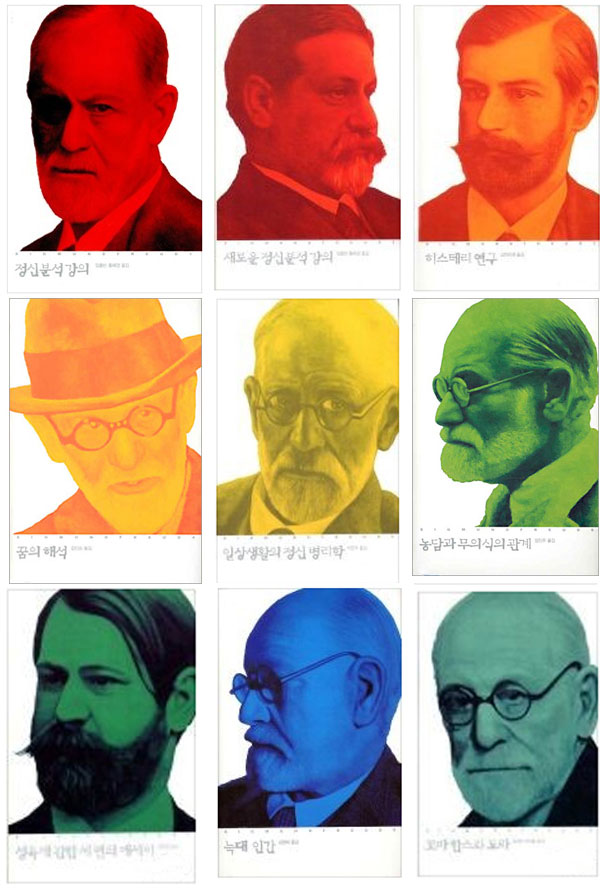

OPENBOOKS 열린책들 소개
열린책들은 독자의 손에서 물리적으로 펼쳐져 읽히는 책이라는 의미와 함께,
경계를 넘어서는 창조적이고 개방적인 사고가 담긴 책이라는 뜻을 담고 있습니다.
열린책들은 아직 구소련의 국경이 열리기도 전인 1996년, 러시아 문학 전문 출판사로 출범했습니다. 세계 문학사에서 차지하고 있던 높은 비중과 위상에도 불구하고 국경과 이념적 편견에 외면당하고 있던 러시아 문학을 본격적으로 출판함으로써 소위 '서방세계'에 편중되어 있던 문화 현실을 극복할 균형추 역할을 자임한 것입니다.
이후 안팎으로 열악한 여건 속에서도 알렉산드르 솔제니찐의 <수용소군도>, 최초로 소련과 저작권 계약을 맺은 <아르바뜨의 아이들>, <도스또예프스끼 전집>과 <뿌쉬낀 전집> 등 러시아 문학의 중요한 저작을 원전 완역으로 꾸준히 출판하며 그 소명을 다해 왔습니다.
시대 조류의 변화 속에서 열린책들의 균형추 역할도 새로운 의미와 방향을 갖게 되었습니다. 러시아의 문학을 넘어 더 넓은 세계의 문학으로, 닫혀 있던 문화적 국경을 열던 노력에서 이제 닫혀 있던 정신의 경계를 여는, '더 넓은 열린 책들'의 세계를 구축하는 새로운 사명을 스스로 부여하였습니다. 1990년대 초반부터 유럽 문학 전반으로 외연을 확대하여 세계의 수준 높은 작가와 작품을 발굴하여 고급 소설 읽기의 새로운 재미를 선사해 온 열린책들은 2005년 <미메시스>, 2009년 <별천지>를 설립하여 예술과 아동문학에서도 품격 높은 책들을 선보이고 있습니다.
열린책들의 지난 세월은, 상업주의에 흔들리지 않고 그러면서도 문학에 대한 경직된 인식에 갇히지 않는, 깊고 넓은 문학 세계를 선보이기 위한 꾸준한 발걸음이었다고 자부합니다. 무엇보다도 한 작가를 소개할 때 그의 모든 작품을 출간함으로써 작가의 세계를 완전하고 깊게 이해할 수 있게 하려는 노력의 하나인 열린채들의 <전작 출간> 방침은 한국 출판 역사에 획을 긋는 새로운 출판의 태도로 기록되기를 소망하고 있습니다. 그러한 정신으로 열린책들은 베르나르 베르베르, 움베르토 에코, 폴 오스터, 도스또예프스끼, 로베르토 볼라뇨까지 세계적인 작가들의 완전한 작품 세계를 한국어로 담는 노력을 계속하고 있습니다. 열린책들은 한국어를 <프로이트 전집>을 가진 4번째 언어로 만들었으며, 한국을 움베르토 에코의 인문 저작을 총 정리한 유일한 나라로 만들었고, 한국민을 <카잔차키스 전집>을 가진 최초의 국민으로 만들었습니다.

25년에 걸친 '원전 완역'과 '전작 출간'이라는 열린책들의 다소 고집스러운 편집 방침과 지금까지 번역 문학의 성과를 바탕으로 2009년부터 <열린책들 세계문학>이라는 새로운 결정체를 낳고 있습니다. 앞으로 열린책들은 시야를 더욱 넓혀 군소 언어권의 중요 작품들을 발굴 소개하는 한편, 편견에 갇혀 제대로 평가받지 못하고 있는 인류 문학 유산의 재평가에도 노력을 기울임으로써 새로운 시대의 또 다른 균형추가 될 것을 다짐합니다.
또, 앞으로도 열린책들은 독자 여러분과 함께 만드는 문화 공간을 이루어 나가고자, 열린 시각과 창의적인 생각으로 각 분야의 양서를 출판하기 위해 노력할 것입니다.